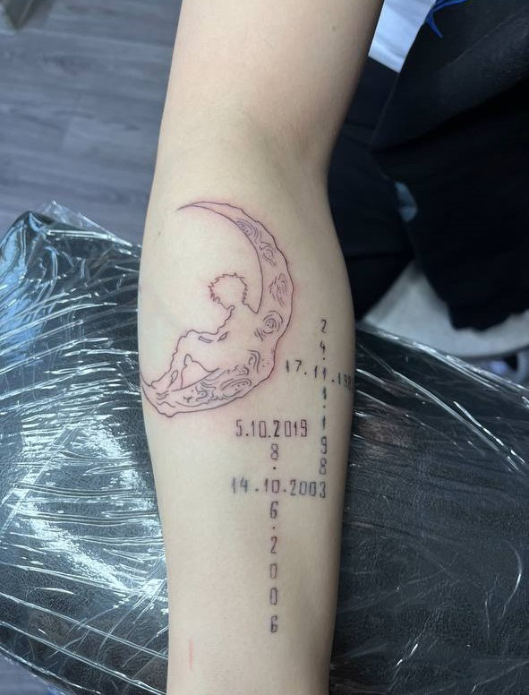

- Все поверхности стерилизуются растворами аванцепт/аламинол
- Все оборудование, поверхности заматываются стрейч пленкой
- Стерилизация держака: обработка медицинскими растворами (аламинол, венделин) от двух часов, ультразвуковая ванна
- Машинка упаковывается в специальный пакет - барьерная защита
- Барьерная защита фиксируется бандажной лентой
- Пигменты и иглы открываются при клиенте, используются единоразово
Tattooliz
Татуировки в стиле графика
О студии
Привет! Меня зовут Лиза, я — мастер тату в стиле графика.
- Обучалась в студии Alphatattoo
- Опыт: 2 года
- Адрес: Богдана Хмельницкого, 72, офис 229
- Совет: выспаться и поесть перед сеансом

Портфолио



Обработка рабочего места
Противопоказания
- Беременность
- Период лактации
- Все болезни в стадии обострения (варикоз)
- Эпилепсия
- Психические расстройства
- Все заболевания крови
- Псориаз
- Экзема
- Алкогольное опьянение
Рекомендации по уходу
Мастер использует пленку "Супрасорб", при использовании этой пленки рана от татуировки заживает за 5 дней.
Первые дни
На поверхности татуировки будет образовываться сукровица. Не паникуйте, даже если её окажется слишком много.
Защита
Мембранная ткань позволит излишкам испариться, и все придет в норму на 2-3 день.
Пигмент
Кроме сукровицы под пленкой могут скапливаться частички крови и красящий пигмент. Как минимум 10% его должно выйти на поверхность кожи.
Ограничения
Чтобы не потерять еще больше краски и в итоге получить яркий и четкий рисунок, придется отказаться от алкоголя, не загорать и не потеть.
Уход
Пленка "Супрасорб" наносится один раз - это все, что необходимо сделать для ухода за татуировкой в первые пять дней.
Защита от инфекций
Пленка пропускает молекулы воздуха и пара, но надежно защищает от бактерий и инфекций. Так что поврежденный участок находится под защитой, даже если вы принимаете душ.
Удаление пленки
Пленка удаляется на 5 день. Для этого подцепите край и тяните его в сторону.
Завершающий этап
После этого вам остается регулярно смазывать место рисунка увлажняющим кремом. Кожа будет шелушиться - это нормально!
Общие рекомендации
Не болеть
Перед сеансом убедитесь, что вы здоровы
Не пить за 3 дня
Алкоголь может повлиять на процесс заживления
Выспаться
Хороший отдых поможет легче перенести сеанс
Поесть калорийную пищу
Организму понадобятся силы для восстановления